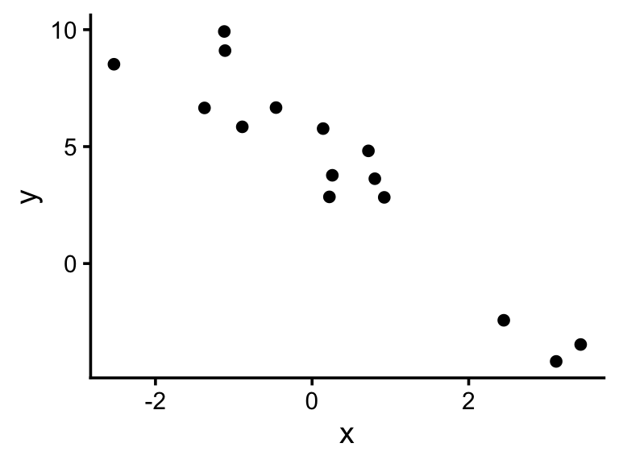
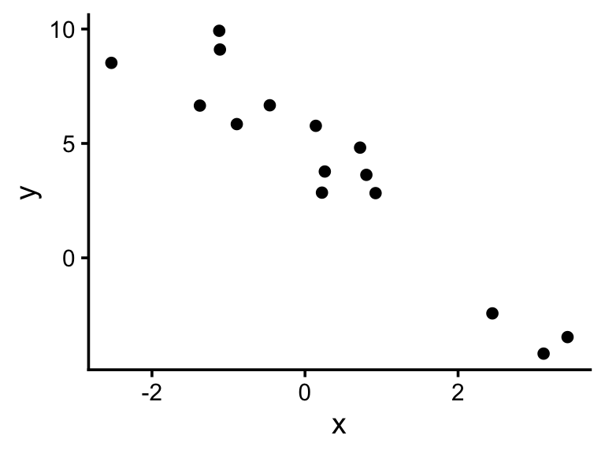
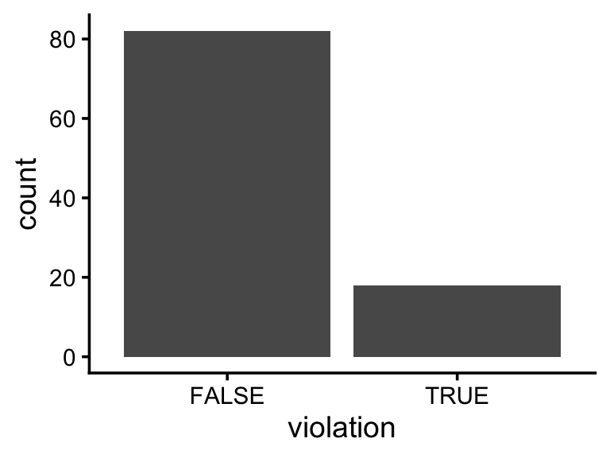

# Betas and sigma
beta0 <- 5
beta1 <- -2
sigma <- 1.5
# Predictor (randomly chosen)
x <- rnorm(15, 0, 2)
# Response
mu <- beta0 + beta1 * x
y <- rnorm(15, mu, sigma)
# Visualize
ggplot(tibble(x, y), aes(x, y)) +
geom_point()
One component of environmental justice is distributive justice, or the fair distribution of environmental harms and benefits across communities. For many distributive justice questions in the US, debates arise whether harms are distributed according to class or race. Switzer and Teodoro (2018) analyzed Safe Drinking Water Act (SDWA) compliance records alongside demographic and economic data at the local government level to investigate whether class, race, or a combination of the two is associated with SDWA violations.
Before we meet, please read The Color of Drinking Water for context about this study. This is a 6-page summary of the study written for the general public.
In class, we will begin to tackle the issues that arise from response variables that don’t fit cleanly into the linear regression framework we’ve been using up to this point. This week, we’ll focus on binary outcomes (yes or no, protected or not protected, etc). Recall the model specification we’ve used until now:
\[ \begin{align} y &\sim Normal(\mu, \sigma) \\ \mu &= \beta_0 + \beta_1 x \end{align} \]
If we know \(\beta_0\), \(\beta_1\), and \(\sigma\), we can simulate \(y\) based on \(x\). Here’s an example:
# Betas and sigma
beta0 <- 5
beta1 <- -2
sigma <- 1.5
# Predictor (randomly chosen)
x <- rnorm(15, 0, 2)
# Response
mu <- beta0 + beta1 * x
y <- rnorm(15, mu, sigma)
# Visualize
ggplot(tibble(x, y), aes(x, y)) +
geom_point()
But what if \(y\) can only be 0 or 1? I.e, a binary outcome. For example, what if \(y\) represents whether a local government recorded a SDWA violation? Recall from earlier weeks that we can use Binomial variables for binary outcomes. The following means “y is distributed as a Binomial variable with one trial and a probability of success p”.
\[ y \sim Binomial(1, p) \]
If SDWA violations always occur with a probability of 0.2, we can simulate them like this:
p <- 0.2
violation <- rbinom(100, 1, p)
ggplot(tibble(violation = violation == 1), aes(violation)) +
geom_bar()
But what if we want to know how \(p\) varies with other factors, such as race and class? In other words, how do we do regression when the response is binary? We might try this:
\[ \begin{align} \text{violation} &\sim Binomial(1, p) \\ p &= \beta_0 + \beta_1 \text{PctHisp} \end{align} \]
To see how the percentage of Hispanic residents is associated with SDWA violations.
Let’s say when \(\text{PctHisp}\) is 0, the probability of a SDWA violation is 0.1 (i.e., \(\beta_0=0.1\)), and as \(\text{PctHisp}\) increases by 1, the probability of a SDWA violation goes up by 0.02 (i.e., \(\beta_1 = 0.02\)). You might try to simulate local communities with different demographics like so:
# Betas
beta0 <- 0.1
beta1 <- 0.02
# Predictor
pcthisp <- runif(15, 0, 100)
# Response
p <- beta0 + beta1 * pcthisp
violation <- rbinom(15, size = 1, p = p)Warning in rbinom(15, size = 1, p = p): NAs produced [1] 1.1045991 0.8078091 1.3999703 0.8494279 0.8108908 1.1673759 1.5806687
[8] 0.5422059 0.9254922 0.6313734 1.3599461 0.4676570 1.8272882 1.5931360
[15] 1.4365693 [1] NA 1 NA 1 1 NA NA 0 1 0 NA 0 NA NA NABut the response doesn’t look right, does it? Before class, think about these questions and note your responses; we’ll discuss them in class.
Look at the simulated outcome, violation. What’s wrong with it?
Look at the parameter p. What’s wrong with it?
In one sentence, what’s the challenge here for regression with binary outcomes?